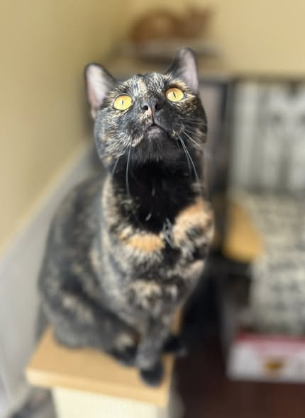
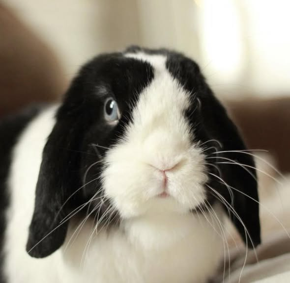
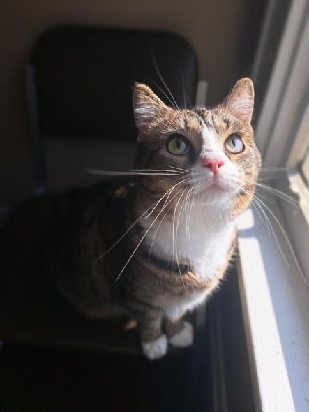

Where every
paw finds a home.
Bespoke care for your companions in the heart of Kentucky. We blend professional reliability with the warmth of a neighbor's touch.

The Whisker Standard
Every visit is anchored by our commitment to artisanal care and safety. We don't just sit; we nurture.
Insured & Bonded
Rest easy knowing your home and companions are fully protected under our comprehensive professional coverage.
First Aid Certified
Trained in emergency pet response and CPR, ensuring a safe environment for seniors and specialized needs.
10+ Years Experience
A decade of local care in Richmond, building deep bonds with our community's four-legged residents.
Artisanal Care for Your Companions
Overnight Stays
Continuous companionship in the comfort of their own home. Perfect for anxious pets or those who simply enjoy a nightly cuddle on the sofa.
- Evening walks & playtime
- Morning routine maintenance
- Complementary house security checks

Daily Check-ins
Scheduled visits to keep the tail wagging while you're at work or away for the day. Focused on exercise, hydration, and mental stimulation.
Specialized Care
From senior feline care to puppy socialization and medication administration, we provide technical expertise with a gentle heart.
Tailored to their unique
needs & quirks.

Meet Your Neighbors at Whisker Hollow
We started Whisker Hollow with a simple belief: pet sitting shouldn't be a transaction, it should be a partnership. Based right here in Richmond, we are committed to serving our local community with a standard of care that feels like family.
"Our mission is to provide the same artisanal care and attention we give our own companions. We're not just watching your pets; we're protecting the heart of your home."

Our Hollow
Primarily serving the greater Richmond area. We bring our artisanal care directly to your doorstep.
Start Your Journey
Tell us a bit about your companion and your care needs.